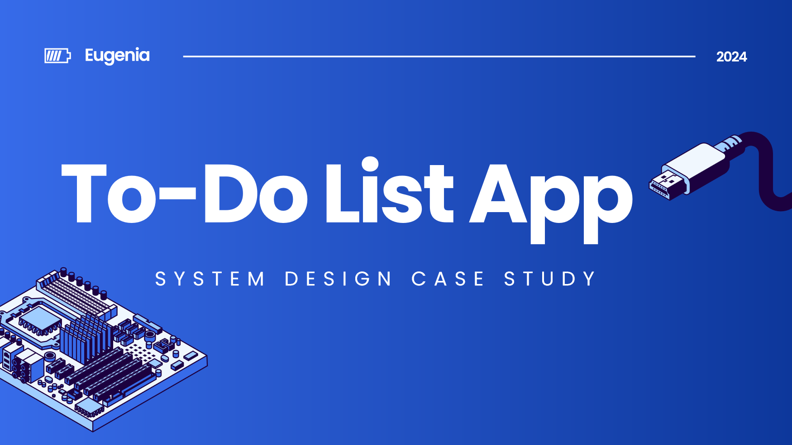

To-Do List App
A personal task manager designed end to end with UML, then built as a Java console app using the Factory and Strategy patterns.
- Year
- 2024
- Role
- System Analyst
- Type
- Course project, BINUS University
- Tools
- Visual Paradigm

From requirements to working code
I designed a to-do list app from requirements to working code. I mapped its functions in a use case diagram, traced the main flows with activity and sequence diagrams, structured the data in a class diagram, and applied two design patterns so the app can grow without rewriting existing code.
Tasks pile up faster than notes can keep up
Tasks from school, work, and personal life pile up quickly. Paper notes and manual reminders can't keep up with changing schedules, and there's no easy way to prioritize by deadline or urgency. Hobbies often get forgotten because they're mixed in with obligations.
People managing their own time
People who want to manage their time better: students with many assignments, young professionals juggling work, and anyone who wants to make room for hobbies. The app is built for personal use, not for teams or companies.
One actor, 10 core functions, 3 shared sub-functions
The system has a single actor, the User, who can access ten functions in three groups:
- Account
- Register Login Logout
- Task management
- Add View Update Delete
- Productivity
- Reminder Sharing Archive
Shared steps such as Insert Task Detail, View All Task Detail, and Manage Notification are modeled as included sub-functions, so they're defined once and reused.
How the main features behave
Activity diagrams show the logic of each flow, while sequence diagrams show how the View, Controller, and Database talk to each other. Select a flow to see its diagram.
Register
Swimlanes separate what the user does from what the system does. If the username already exists, the user sees an error and returns to the form. If not, the system updates the database and shows a success message in parallel.